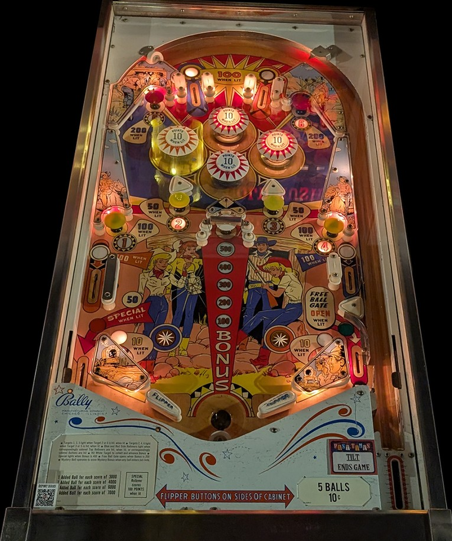

Not to be confused with Gold Rush (Williams, 1971), the 4-player version of the 1-player Klondike, which has slot machine-style reels on the playfield.
Shoot lit mushroom bumpers as the most reliable way to get points by the 50s or 100s. The white mushroom bumper in the middle of the playfield scores and advances the Bonus shown on the playfield up to 500 points, but a gate blocks this mushroom bumper, and the gate only opens when the ball settles in the saucer located between the flippers. A ball coming down the playfield will likely move too fast to settle in this saucer, but if you have the ball trapped on a flipper, simply let go of that flipper and the ball should roll into the saucer for a Bonus.
The below picture of Gold Rush's playfield was taken from the Open Pinball Database.

There are 3 top lanes: the left lane is blue and scores 10 points or 100 when lit, the middle lane has no switch and scores no points, and the right lane is red and also scores 10 points or 100 when lit. There are also 6 mushroom bumpers around the playfield: 1, 2, 3, and 4 are yellow across the middle of the playfield, and 5 and 6 are red in the top corners of the playfield. Mushrooms 1 and 4 score 10 points or 100 when lit. Mushrooms 2 and 3 score 10 points or 50 when lit. Mushrooms 5 and 6 score 50 points, or 200 when lit. At any given time, either mushrooms 1-3-5 plus the red top lane will be lit, or mushrooms 2-4-6 plus the blue top lane will be lit. Any switch in the game that scores 50 or 200 points alternates which set of top lanes and mushroom bumpers are lit.
At the start of each ball, the Bonus is 100 points. In the middle of the game, there is a white mushroom bumper is blocked by a gate; the only way to hit the white mushroom is to allow the ball to settle in the saucer between the flippers, which will open the gate and fire the ball upwards so it can hit the white mushroom. Hitting the white mushroom bumper scores the current Bonus and adds 100 to it, or resets the Bonus back to 100 points if it was already maxed out at 500. Hitting the white mushroom bumper a single time on a ball lights the free ball gate in the right out lane for the rest of that ball. If the Bonus is 400 or 500 points, the left out lane will be lit for Special, which can score a free game, an extra ball, or 100 points.
The simplest way to put the ball in the saucer between the flippers for a chance at the white mushroom bumper is to have the ball completely motionless on a flipper, then lower that flipper to let the ball roll into the saucer. There is a large round rubber directly below the saucer that can be used to prevent a ball from draining or to encourage to settle in the saucer itself. The saucer fires the ball directly upward at the white mushroom; after hitting the white mushroom, the ball may either come straight back down with a chance to enter the saucer again, or it will deflect to the left or right, where a flipper can be used to send it away or slow it down. Sometimes, multiple trips to the white mushroom can be chained together in this way; this is very valuable, but very risky, since the power and angle of the saucer tends to vary slightly.
Just above the out lanes are rollover lanes that are side lanes that are red (left) or blue (right). The red lane on the left drops the ball directly into the left out lane, while the blue lane on the right curves back toward the middle of the playfield, directing the ball toward the right slingshot or right flipper. Making the blue top lane when lit or pressing the blue star rollover near the right slingshot lights the blue lane for 100 points instead of 50. Making the red top lane when lit or pressing the red star rollover near the left slingshot lights the red lane for 100 points instead of 50. Lit side lanes are extinguished at the end of the ball.
All pop bumpers and slingshots score 1 point, or 10 when lit. The top pop bumper is always lit for 10 points. The other three pop bumpers and the two slingshots are part of a dynamic difficulty system, used in many mid-60s Bally games, where switch hits around the game cause the bumpers and slingshots to turn on and off seemingly randomly, with the game being increasingly less likely to light the pops or slings as the game gives out increasingly more Specials to players.
There are no in lanes. Flippers back up directly to the slingshots. The slingshots are quite small, because there is still an out lane on each side of the game, but the flippers are quite far apart to fit the saucer between them and additional room for the ball to drain between the flipper tips and the saucer. Out lanes score 50 points. The left out lane is lit for Special if the Bonus is 400 or 500 points. The right out lane has a free ball gate which directs the ball back to the shooter lane for a replunge; it is not closed when it is used, and will be opened for the rest of the ball after using the lower saucer to hit the white mushroom bumper one time.
The Bonus shown on the playfield below the white mushroom bumper can only be scored by hitting that mushroom bumper via the saucer between the flippers; it is never given for free at the end of a ball. However, when any ball drains, a mini-ball will be fired into the bagatelle game on the backbox, which can award a player an additional 10 or 100 points at the end of each ball. This is the only true end of ball bonus. Tilt ends game.
The footage referenced when writing this guide was taken by Steel Valley Pinball at Past Times Arcade in Girard, OH.